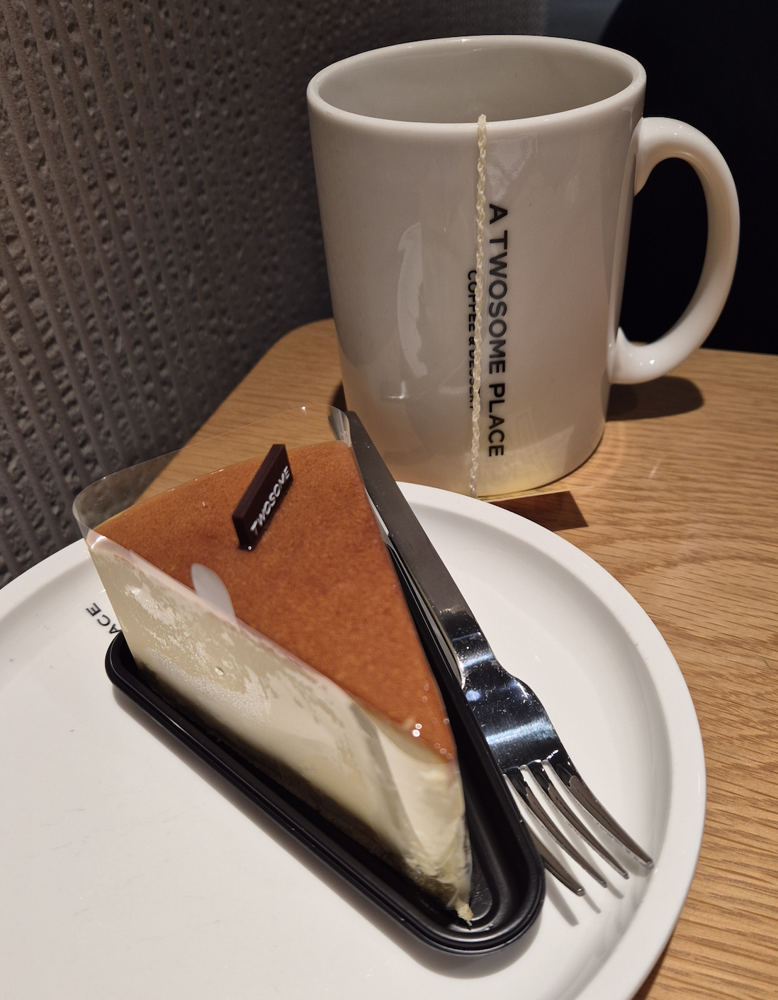
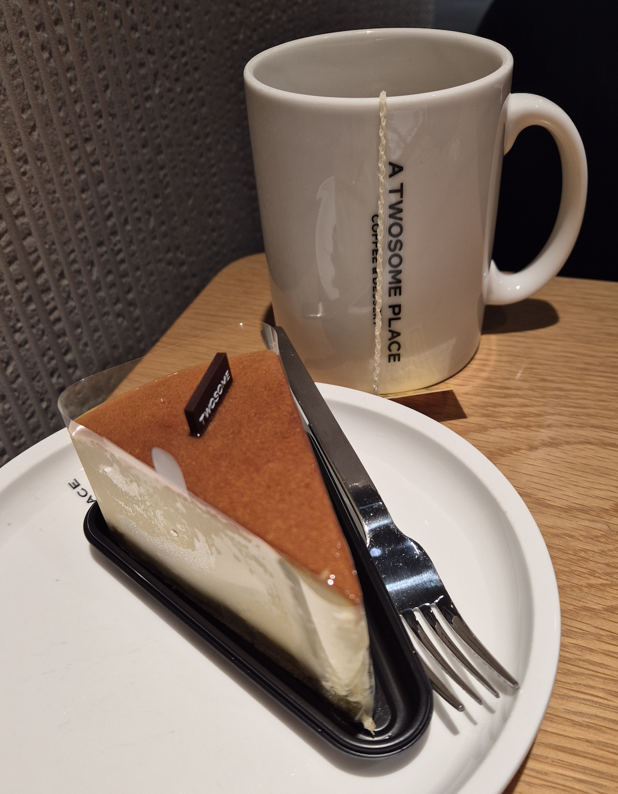
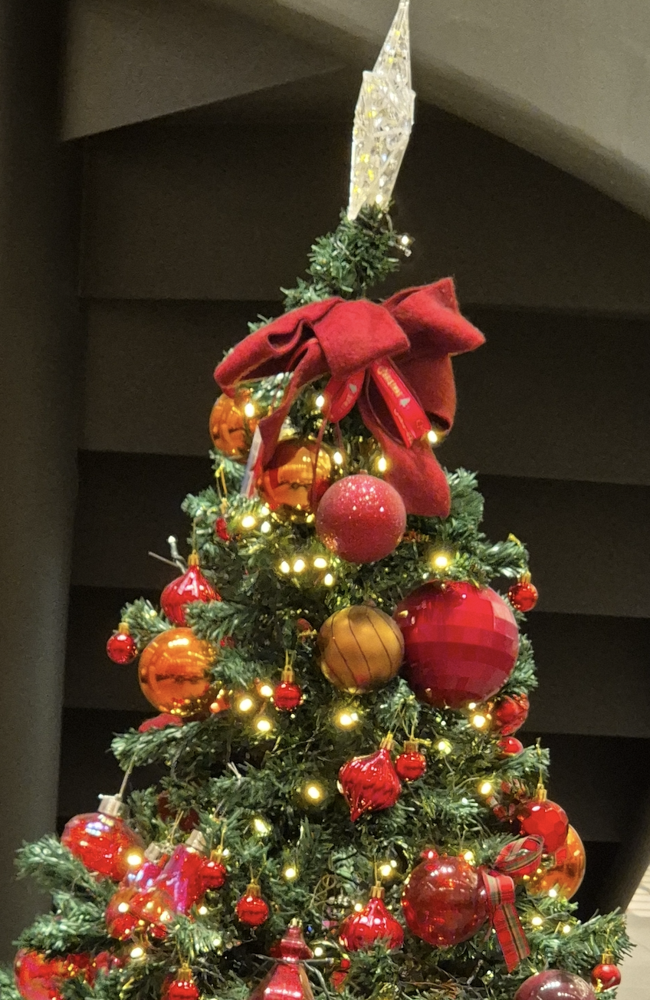
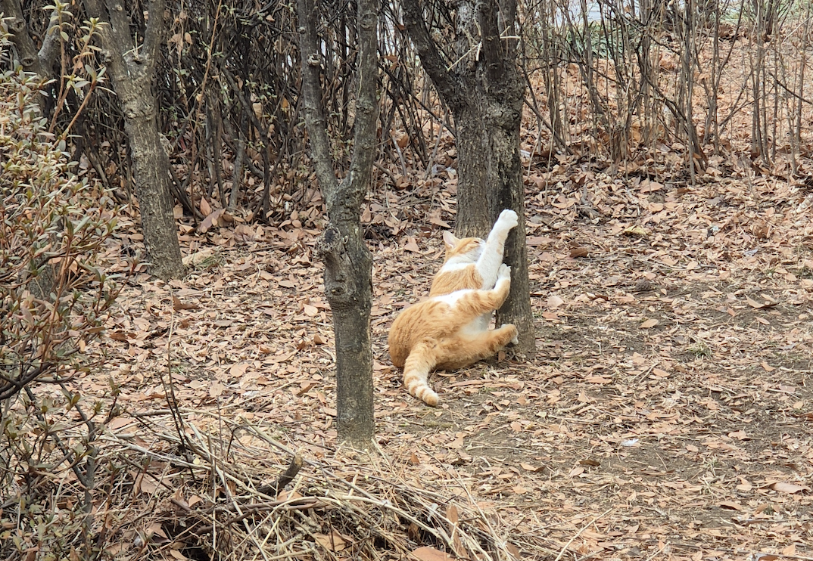
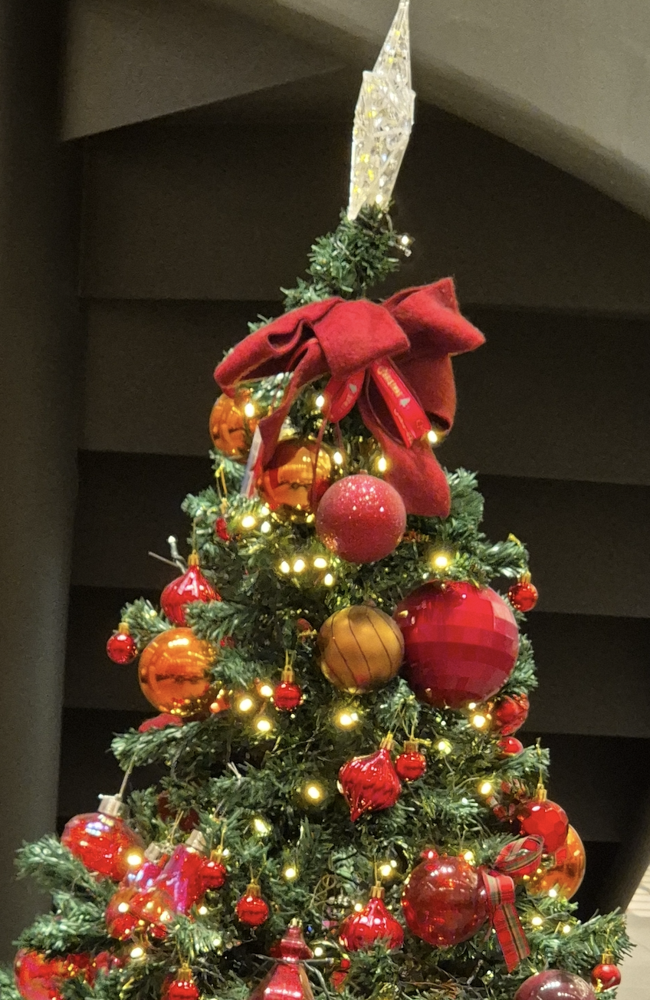
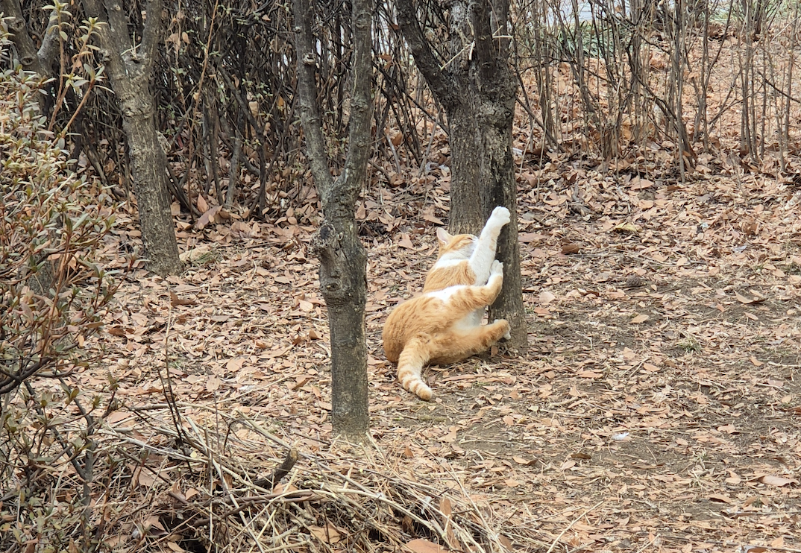
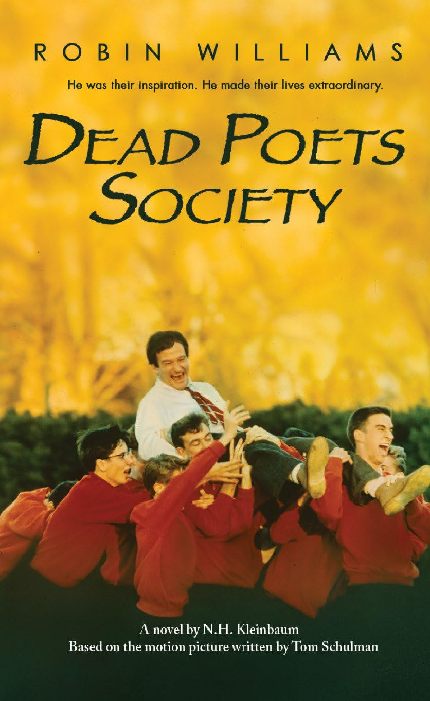

 



인생 서적

저는 대학 시절 고전부터 현대 작품에 이르기까지 영어 문학을 접하게 되면서 단어 하나하나가 사람들에게 영감을 주고 배움을 선사한다는 점이 매력적으로 다가왔어요. 이러한 글들이 단순한 소통의 도구를 넘어, 우리가 세상을 바라보고 함께 연결되며 새로운 가치를 만들어가는 데 중요한 역할을 한다는 것도 느끼게 되었어요. 또한 페이지 속에 담겨있는 문화와 역사를 바탕으로 과거와 지금의 세상을 비추어 보며 미래까지 그려볼 수 있다는 생각이 들기도 했어요. 그 중에서도 가장 기억에 남는 작품은 '죽은 시인의 사회'입니다. 해당 서적은 본래 톰 슐만이 작성한 각본을 낸시 클라인바움이 소설화한 작품인데요, 작품에서 등장하는 월트 휘트먼 시의 'O, Captain! My Captain!' 구절이 워낙 유명해서 해당 작품의 이야기를 많은 분들이 대강이나마 알고 계실 것입니다. 저 또한 작품을 통해서 교육의 가치와 더 나아가 개인의 삶을 살아가는 방식에 대해 다시 한 번 생각해보게 되었어요.